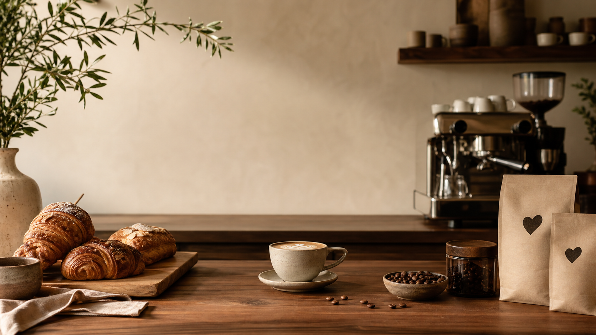

Signature

Specialty coffee · brunch · beans
Hearty
Coffee
Des cafés de saison, une cuisine courte, des tables qui restent chaudes toute la matinée.
Voir la carteUn cafe qui prend son temps.
Hearty Coffee assemble l'intensite d'un espresso precis, la douceur d'une boulangerie de quartier et le calme d'un atelier lumineux.
Grains tracables, laits bien textures, assiettes simples: tout est pense pour le premier cafe du jour comme pour le dernier rendez-vous.
Atelier grains
Torrefie pour le comptoir, emballe pour la maison.
Chaque sac indique le profil, la methode conseillee et la date de torrefaction. On moud a la demande, du filtre doux a l'espresso plus nerveux.
Passer au shop
07:30
Fournee chaude, espresso regle, banquette au soleil.
12:00
Sandwich focaccia, salade croquante, iced latte a emporter.
16:30
Cookie sel fume, batch brew rond, playlist plus lente.
Hearty Coffee
Ouvert tous les jours au coeur du quartier.
- Adresse
- 18 rue des Tilleuls, 75011 Paris
- Horaires
- Lun - Ven 07:30 - 18:30
Sam - Dim 08:30 - 17:00 - Contact
- hello@heartycoffee.fr
01 42 00 00 00